Introduction
This guide will help you get started playing Warzone 2100.
The Warzone 2100 Project has its website at https://wz2100.net.
If you want to talk to other Warzone 2100 players, visit the forum at https://forums.wz2100.net
You can also talk with us and other players on our official Discord server or IRC rooms here: https://wz2100.net/webchat/
If you’re interested in developing Warzone 2100, the Project is always looking for help. Go to https://github.com/Warzone2100/warzone2100
If you want more information about Warzone 2100, including mod information, individual component statistics, and more, go to https://betaguide.wz2100.net
Enjoy Warzone 2100!
Interface
The interface can be turned on or off with Tab.

-
Messages (top): The message bank. This keeps all the last few messages given to you by the game. To see more of your most recent messages, press the `/~ key (this is the backtick/tilde key; usually found between Esc and Tab).
-
Time remaining (top right): The time limit. This is only seen during Campaign. If this goes down to zero, you lose!
-
Command panel (bottom left): The command panel.
-
Power (bottom): The power bar.
-
Map (bottom right): The minimap.
Controlling the Camera
When Warzone was released in 1999, it was one of the first real-time strategy games to be in 3D. Now, most real-time strategies are in 3D, but if you’re not used to it or don’t know how to use it, let us help you learn.
-
Moving: To move where you’re looking at, move the mouse to the edge of the window/screen, or use the arrow keys.
-
Rotating: To rotate the view, hold down the right mouse button, and move the mouse in any direction. (The view can also be rotated using 8 and 2 (up/down), or 4 and 6 (left/right) on the numeric keypad.)
-
Zooming: To zoom in or out, use the + or - keys on the numeric keypad, or use the mouse wheel.
-
Reset view to north: If your camera angle feels unnatural, pressing Backspace will reset your view to the north.
-
Unit Tracking: Press Spacebar when units are selected, and the camera will follow them. Press Spacebar again to stop Unit Tracking.
-
Jump to base: Press B to center the view at your Command Center. Useful if you need to get back to base quickly.
Minimap
The minimap is a very useful tool on the Warzone battlefield. It helps you keep track of your units and structures, your opponents units and structures (within range), and the map itself. Orders can be issued over the minimap, and it can be used to jump to a part of the map very quickly.
The minimap is given after you build the Command Center.

-
Faint-white trapezoid: This is a visual representation of your camera on the radar. The large end points towards where you’re looking. The small end is where the camera is.
-
Transparent areas: Unexplored - will peel away as you send units into them. These areas are black on the screen.
-
Green area: Units or structures that belong to the green player (in this case, us).
-
Yellow/gray/black/red/blue/cyan/magenta area: Units or structures that belong to the yellow/gray/black/red/blue/cyan/magenta player (not pictured).
-
Red/white flashing area: Units or structures belonging to you that are under attack.
-
Green pulse: Artifact. Needed to research technologies in Campaign. In Skirmish/Multiplayer, can be found by destroying enemy base structures.
-
Red pulse: In Campaign, an enemy base or other point of interest. In multiplayer, it is used as a beacon to alert other players.
-
Blue pulse: A free oil resource.
-
Moving the camera: Right-click anywhere on the minimap to move the camera.
-
Giving orders: If you have units selected, click anywhere on the radar, and the units will carry out that order.
-
Zooming in and out: Hover your mouse over the minimap and move the mouse wheel up or down.
Power

The power bar

A spare oil resource, and a derrick hard at work
In real life, money is power, but in Warzone 2100, power is money. You spend power to build structures, manufacture units, and research upgrades/new technology.
Getting Power
So, how do you get power? Power is generated by Power Generators that are fed by Oil Derricks. Each Power Generator uses up to 4 Oil Derricks, so for example if you have 10 Oil Derricks you must have 3 Power Generators to generate maximum Power in this case.
Oil derricks must be built on oil resources, but the Power Generators can be anywhere on the map. Keep in mind that additional generators beyond one for every four derricks will provide no benefit. Also note that building heaps of power generators won’t do anything at all until you have at least one oil derrick for each.
Pricing
Icons in the Manufacture, Build, and Research menus will have yellow bars in them representing their price:
 Inexpensive weapon
Inexpensive weapon
 Expensive weapon
Expensive weapon
When you place your mouse over an icon, the power bar will have a green section, representing its price. If you cannot afford it, the power bar will instead turn red.
The amount of power you have is shown on the very left of the power bar. If you place your mouse over an icon, if you have enough power to get it, the number will show the amount of power it will cost. If you can’t afford it, the number will show the amount of power you need to be able to afford it.
Power is drawn as soon as the icon is clicked. Providing you have sufficient power for the activity, the initial progress bar fills quickly with green (slower with more costly actions) and the construction or research begins. A yellow progress bar then charts the progress achieved by the current activity.
Upgrades
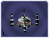
Power Generators can have a Power Module built on top of them to squeeze out more power. Power Modules need to be researched before you can build them. There are also several researchable upgrades available which increase the amount of power you receive.
Ordering Units
Using Units
Gotten used to the interface? Okay, well, time to actually use our units.
Selecting and moving units
To select a unit or cyborg, left click on it. Multiple units can be selected by clicking and dragging, and encasing the units in the drawn square, or by holding down Ctrl or Shift and clicking on multiple units.
To move the selected units, left click on the terrain of the map. This can also be done over black areas of the map to explore the area. To attack an enemy unit, left click on it. You can deselect a unit (or a group of units) with a right-click.
Queuing and waypoints
You can set a path with waypoints, which units will visit each waypoint in order. You can also select a queue of enemies for units to attack. Hold Shift or Ctrl while selecting units or clicking places to move.
This also works for queuing construction of Oil Derricks and/or structures in a chain - hold the key down while queuing the structures you want to build one by one, then release the key after you are done.
Groups of Units
To make groups of units, select the units you want and press Ctrl+[number] to make a group. A group of units will have a number next to it. To select a group of units you have made, press [number]. Groups can also be selected by double-clicking a unit in a group. To center the camera on a group, press the [number] twice.
Defending
Click a friendly structure or truck with weapon units selected (the cursor will be a shield) and the units will move to guard it.
Unit orders menu

Right-click on a unit (or select a unit and hit NUM0 on the numeric keypad), and a unit orders menu will appear above the command panel. This contains options to configure a unit’s behaviour.
Right-clicking on a factory will customize the orders of all future units that that factory produces.
Attack range
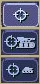 |
Optimum Range: Fires at the most accurate range (default) Short Range: Moves to short range and attacks Long Range: Attacks at long range |
Retreat threshold
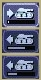 |
Do or Die: Your unit will not retreat unless ordered to. (default) Retreat at Medium Damage: Your unit will retreat (return to repair facility, HQ, or LZ) at medium (yellow) damage Retreat at Heavy Damage: Your unit will retreat at heavy (red) damage |
Firing
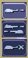 |
Fire At Will: Fires at any enemy (default) Return Fire: Only fire if fired at Do Not Fire: Units will not fire |
Movement
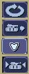 |
Patrol: Moves in a circle on a position. Just click an area after selecting it. Pursue: Pursue enemy. Guard: Stay near an area or structure. (default) Hold Position: Do not move under any circumstances. |
Return
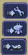 |
Return for Repair: Unit will return to a Repair Facility Return to HQ: Unit will return to Command Center or LZ (campaign) Go To Transport: Unit will go to and board transport |
Recycling
Recycling a unit will send it to the nearest Repair Facility or Factory, and destroy it. Half the power used in making it will be refunded to you. The unit’s experience level will be placed in the next unit that is manufactured.
Unit experience
See also: Unit experience
Units have experience levels depending on how many kills the unit has. A higher experience level means that a unit is more accurate, moves faster and takes less damage. An icon displaying a unit’s rank is displayed next to the unit’s health bar.
Hardpoints and bunkers
Hardpoints, bunkers, and other defensive structures cannot be ordered to shoot directly. However, you can assign artillery emplacements to a sensor tower. Nearby commanders with the indirect fire support option activated will also command these structures.
Indirect-fire units and sensors
Ordering VTOLs
VTOLs are used similarly to ground units. However, they do have a few differences. For one thing, they can fly…
Design and production
To produce VTOL units, you’ll need the VTOL Propulsion and VTOL Factory researched, and a VTOL Factory built. You should also research and build a few VTOL Rearming Pads, otherwise, they won’t be able to reload ammo.
Before you produce a VTOL unit, you must design it. VTOLs are designed the same way as regular units — simply select VTOL propulsion — but they use slightly different weapons (more on that later).
VTOLs can only be built at VTOL Factories. VTOL factories can be upgraded with factory modules — there’s no need to research a separate "VTOL factory module".
Moving
After producing a VTOL from a VTOL Factory, it will fly and land on the rally point. VTOLs can be ordered to move and attack like any regular unit. Although they can fly over water and cliffs, they will not land on them.
Attacking
VTOL weapons differ drastically from normal weapons.
To attack with a VTOL, select it and click an enemy like normal. However, you may have noticed the white ammo bar below its health bar as you start attacking.
Unlike ground units, which reload automatically, VTOLs carry a limited amount of ammo. Once that ammo runs out, the VTOL can’t attack until it refuels. A VTOL out of ammo will automatically find a VTOL rearming pad to rearm and repair itself (and will resume attacking once fully rearmed), or it can be manually rearmed by selecting it and clicking on a rearming pad.
Unlike other units which usually attack the nearest target, VTOLs will not attack anything automatically. However, by selecting a VTOL and alt+clicking on an area, a VTOL will patrol the area between its current location and the clicked location, and attack anything in the vicinity. Alternatively, they can be assigned to VTOL strike towers and VTOL CB towers, which will cause them to function similarly to artillery assigned to sensor towers.
VTOL weapons
Most weapons have a VTOL equivalent, which does approximately twice as much damage, but has limited ammo. VTOL versions of regular weapons, like cyborgs, do not need to be researched separately.
In addition to VTOL versions of ground-based direct weapons, VTOLs can also use bomb weapons. These weapons are the equivalent of artillery, and are very powerful.
Defending against VTOLs
VTOLs are not ground-based units, so most ground weapons cannot hit them. They an only be hit by either anti-air (often abbreviated AA, which can only hit air units) or versatile (can hit air or ground) weapons.
There are only a few weapons that are versatile: machineguns, lasers, and Mini-Rocket Pod. Rockets and missiles are also versatile, but only when mounted on a cyborg or VTOL. In addition to being uncommon, versatile weapons do not do as much damage to VTOLs as dedicated anti-air, so having some AA is recommended against VTOLs.
Other orders
Patrol: In the Unit Orders box (right-click, remember?), there are a couple of new icons. Patrol will do the same thing as alt+clicking — move back and forth between its current location and the clicked location, and attack anything near its path, refueling when they need to before returning to defending.
Circle: In the Unit Orders box, next to Patrol, is the Circle button. Click it and then click an area of ground, and the selected VTOLs will take off and fly in a circle above the selected point. Like Patrol, they will attack anything that gets nearby, and refuel automatically.
Command Panel
There are six different command panel interfaces, plus a central button. You open up a command interface by pressing the appropriate button.
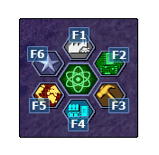 |
F1: Manufacture F2: Research F3: Build F4: Design F6: Commanders |
The middle button closes any open command interface.
Manufacturing
Manufacturing units is, in a way similar to building structures. The buildings that can build units are Factories, Cyborg Factories and VTOL Factories.
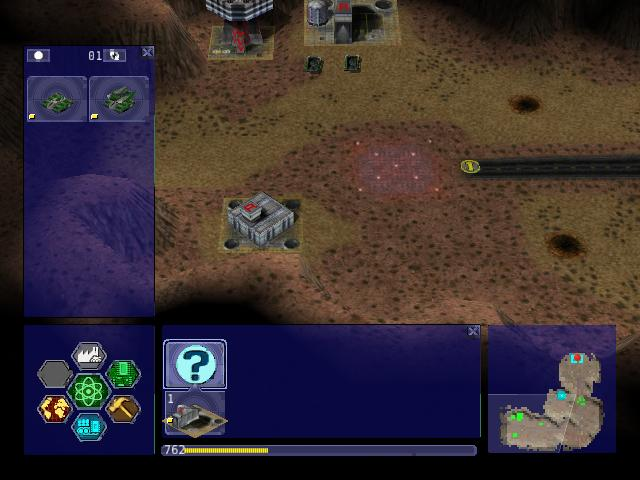
Selecting a unit to be manufactured
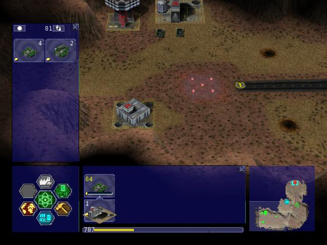
The unit being manufactured
Building a Unit
To manufacture a unit, press the Manufacture button. A Fast Find bar will open at the bottom of the screen, between the radar and the Command Panel.
The bottom row of the two contains every Factory, Cyborg Factory and VTOL Factory built. Clicking it will move the camera to the structure.
To manufacture a unit, click the space above a factory in the Fast Find bar. If this factory is capable of building the unit, it will appear in a menu on the left side of the screen.
A factory can only build a unit if the propulsion of a unit is a certain type (unit/cyborg/VTOL), and if the factory has enough modules applied.
Queuing Units
You can build up to nine units by repeatedly clicking the unit. You can also right-click the unit to lower the amount of units to build — right-clicking on a unit with no units queued will set the queue to 9.
Building Status
While a unit is building, the unit will be shown in the Fast Find bar above the factory that is building it. If the bar is green, the unit is gathering power to build the unit. If the bar is yellow, the unit is building.
Rally Points
When the unit is done building, it will spawn next to the factory, then proceed to the designated rally point of the factory which was made when the factory was built. Right-clicking on the factory in the bottom Fast Find row will center the camera on the spawn point. Clicking a rally point will allow you to move it in a similar way to building a structure. Please note that moving a rally point while a unit is moving to one will not affect its path.

Rally points (clockwise, from top left): Cyborg rally point, Factory rally point, Repair Facility, VTOL rally point
Looped production
You can also set looped production by left and right clicking the loop button in the left column near the top, which repeats the currently building sequence. This can be set to infinite by right-clicking when the number reads zero.
Research
Researching technologies is very simple. You can only research technologies with Research Facilities.
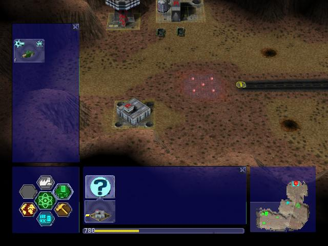
Selecting a topic to research

The topic being researched
Researching
Single Player
In the single player, you can collect Artifacts from enemies and research them. Artifacts are small white boxes with a wrench above them, and can be collected by any unit by moving to it.
Multiplayer/Skirmish
In Multiplayer/Skirmish games, you progress along a "tech tree" - a couple of topics can be researched, which in turn will unlock more technologies - also referred to as progressing up the tech tree.
Researching a topic
When you open the Research menu, a Fast Find menu with two rows will appear at the bottom of the screen. All your research facilities are shown on the second row. Clicking a research facility will move the camera to it.
Clicking the blank icon above a facility will show a set of icons on the left. You can hold the mouse over an icon to see its name. Click an icon to start researching it. Only one center can research one technology at a time.
While a facility is researching, it displays a bar in its Fast Find area. If the bar is green, the facility is gathering power. If it is yellow, the topic is being researched.
Research Completion
When research is completed, the game will inform you with a message and playing a sound "Research Completed". If it was a major technology advancement, an entry will be made in the Intelligence Display. You can check the entry for more information about the research.
Research Upgrades
You can research a Research Module during the course of the game. To apply it, select a truck and left click a non-upgraded Research Center, and the truck will build it. However, the topic you are researching will be paused until the module is built - it’s your choice to either build it or wait until it finishes.
Other upgrades are also available for Research Centers, but these are applied instantly with no need to build anything.
Building
Building structures is absolutely vital in Warzone 2100 - from Factories which build units, to Research Centers that researches new technologies.
Building can be done with units with Trucks as turrets and/or Combat Engineers.

Selecting a structure to build
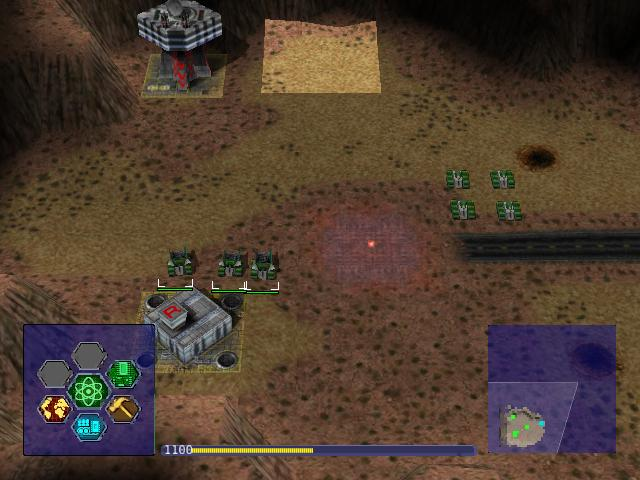
Selecting an area to build the structure
Building a Structure
To build, you need to select Build on the Command Panel, and this will bring up two rows of icons on the bottom of the screen, between the Command Panel and the Radar. These each represent one unit (either a truck or a Combat Engineer) that is able to build. Clicking the bottom row of icons will zoom the camera to the unit. The top row of icons will pull up a bar on the left side of the screen (diagram 1). The two columns of icons represent the structures you can build. Click a structure on the columns to select it for building. You can hold the mouse over an icon to see the structure’s name.
Selecting a location
When you select a structure, it closes the two menus (like clicking the middle button). A silhouette will appear in the world. This is where your structure will be placed. Move the square by moving the mouse. Click to place the build site for the structure. If the silhouette is red, the structure cannot be placed. To build "walls" (when building defenses) you can click and drag the box to draw a wall.
Oil Derricks
Oil Derricks can only be built on Oil Resources which aren’t on fire. Fires on Oil Resources are caused by enemies destroying your Oil Derricks - they will burn out over time. Oil Derricks are built automatically if a truck is selected and you left-click an Oil Resource.
The unit you selected to build the structure will move to build the structure.
If you open the Build menu again, the unit’s status will be shown in the Fast Find bar. If there is a structure without a bar in the Fast Find top row above a unit, the unit is moving to the build site. If there is a green bar, it is accumulating power for building. If there is a yellow bar, it is building the site.
Repairing
You can assign a unit to repair a structure by selecting it and left-clicking a building.
Demolishing
Demolishing a building is almost as simple as building one. Select "Demolish Structure" in the Structure menu and click a building to demolish. The unit will move to the building and destroy it, giving you half the power used in building the structure. The ability to Demolish Structure will always be available, from the beginning of the game to the end.
Teamwork
You can assign extra trucks/cyborgs to a building to build it faster. Simply select a unit and left-click a structure, and the unit will move to the building and start helping with construction.
Hardcrete and Tank Traps
You may wonder what the Hardcrete and Tank Traps do. Well, they do nothing. They just sit there and keep your units and enemy units from passing through.
Design
You need to design new units and VTOLs if you want to overpower your enemies and get that sweet taste of victory. This aspect of the game is what makes Warzone 2100 unique in its own way. Note that you need a Command Center to be able to design units!
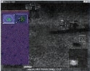
Designing a new unit
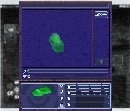
The unit being designed
Designing a unit
To make a new unit, select the Design icon in the Command Panel. This will make two columns appear on the left of the screen. To make a new design, select the green body. To select another unit to edit, just click it.
Designing a new unit is simple. It’s a three-step procedure: selecting a body, a propulsion system, and a turret. The three picked will result in a new unit.
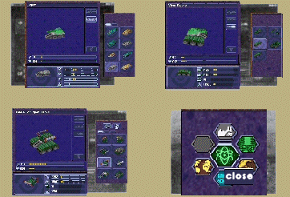
Clockwise, from top left: Select a body, propulsion type, turret, and closing the menu
Designing the unit
When a new unit is started, a list of bodies will appear on the right, with a green outline of a body in the centre. A two-column body list will appear on the right. Select one to move on to the next section — the propulsion type. Select a type and move on to the turret. There are two types of turrets, weapons and systems. Both are defined at the top of the two-column by buttons — you can switch by clicking the respective button. Select a turret, and you’re done.

The top half of the Design (minus completed designs)
-
The name of a unit. You can click this and change it by typing.
-
Click this to change a body of a design.
-
Click this to change a propulsion type of a design.
-
Click this to change a turret of a design.
-
Click this to delete the currently selected design (only works with completed designs)
-
Power required to make the unit
-
Hit points the unit has
-
Select the System turrets (turret only, normal units only)
-
Select the Weapon turrets (turret only, normal units only)

-
How fast the unit moves over roads
-
How fast the unit moves off-road
-
How fast the unit moves over water
-
Weight of the unit (affects the speed and durability of the unit)
Intelligence Display
While the Intelligence Display doesn’t have a large purpose like the rest of the functions, it is still very useful indeed - it contains a record of all the technology you have researched, and your mission objective in Campaign missions.

Intelligence display with piece of intelligence selected
What’s displayed
When you open the Intelligence Display, two rows of icons appear on the bottom of the screen. Selecting an icon will display information in the middle of the screen. This is helpful for looking at technologies you have researched. During Campaign, intelligence that is always displayed is your mission objective.
We Brake For Nobody
Please note that while the Intelligence Display pauses the game in Campaign mode, it doesn’t do so in Multiplayer and Skirmish!
Commanders
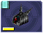
Command turrets are used much like sensors, except they can command any attacking unit, not just artillery. They are limited to having 6 non-artillery attacking units assigned to them at first, but this limit rises by 2 each time the commander gains a rank, which can happen relatively quickly.
Command turrets provide an accuracy, armor, and movement speed bonus to all units assigned to them.

The Commanders panel. Note the similarity to the Unit Orders panel.
Prerequisites
Commanders require you to research the Commander technology.
Attaching
To attach a unit to a Commander, select a unit, then left-click the Commander you want to attach the unit to. A symbol will appear next to the unit to signify it is attached.
Limits
Be warned, however; Commanders have a limit to the amount of direct-fire units (eg machineguns) which is affected by their own experience level. Levels are earned by the Commander reaching 2 kills, 4, 8, 16, 32, 64 and so on. Each experience level allows the Commander 2 more direct-fire units. However, a Commander can have as many indirect-fire units as it wants.
Detaching
To detach a unit from a Commander, select the unit you want to detach, hold the Control key, and give the unit a new order (eg. move).
Targeting a unit
You can designate a target by selecting a Commander and right-clicking a unit. This allows any attached units to have greater accuracy when firing on a targeted unit.
Commander Unit Command Centre
A Commander Unit Command Centre is similar to a Unit Command Centre, but there are extra buttons.
Factory Assignment

The Commander Factory assignment buttons
You can assign a factory to a Commander. This makes the units manufactured by the factory to be automatically assigned to the Commander’s group. To do so, bring up the Commanders menu by left-clicking the Commander and opening the Commanders menu, or right click the Commander, and click the factory NUMBER at the bottom of the Command Console.
You can find the factory number by looking at the number on the factory in the Manufacture Fast Find bar. There are three rows of these numbers — the top is normal Factories, middle; Cyborg factories, bottom; VTOL factories.
Going for repairs, BRB
A unit that retreats from the battle to go to a repair facility, will stay connected to its Commander group. When it is done repairing, it will return to its Commander.
Indirect fire support
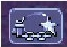
The indirect fire support icon
You can assign all the indirect fire pits and emplacements to a Commander’s designated target, also known as "fire support". To do so, simply select a Commander, open the Commanders menu, and select the above icon. To cancel it, select the same button, or assign the fire support to another commander.
Artillery and Sensors
As a review, keep in mind that "artillery" here refers to all indirect-fire weapons except the mini-rocket artillery (MRL) and Angel Missiles, namely:
-
Mortars (mortar, bombard, pepperpot, incendiary mortar)
-
Howitzers (howitzer, ground shaker, hellstorm, incendiary howitzer)
-
Ripple rockets
-
Archangel missiles
Although the MRL and Angel Missiles are indirect-fire weapons, they should be used like one would use direct-fire weapons, since their range is low enough that its internal sensor can handle it; external sensors are unnecessary.
Sensors
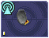
Regular sensors can be used for scouting and surveillance, but they have a more important usage: to spot for artillery.
Using sensors with artillery
Artillery weapons, by themselves, cannot fire more than their sensor range (8 tiles without upgrades). However, even the lowly mortar has an 18-tile weapon range. To use it, players need to use sensors.
Artillery structures are the easiest. Simply build a sensor tower, and if the sensor tower is targeting something within your artillery structures' weapon range, they will fire at it. An artillery tank, however, needs to be explicitly assigned to a sensor to function. Select the artillery tanks, then click on a sensor to assign the tank to the sensor.

Artillery assigned to a sensor. Notice the * next to them, which indicates that they are assigned.
Once the artillery is assigned, if it is assigned to a sensor tower, that tower will target enemies that come in range automatically.
If it is assigned to a sensor tank, the sensor can be used to attack enemies by selecting the sensor and targeting an enemy. All artillery assigned to the sensor will attack its target.

Notice that the artillery can be very far away — only the sensor turret needs to get within range.
To unassign a unit from a sensor, the easiest way is to right-click it, then tell it to move somewhere. Multiple units can be selected with ctrl+click, and moving them all.
CB sensors
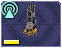
A CB (Counter-Battery) tower or turret is used similarly to a standard sensor; however, it serves a specialized purpose: To counter-attack enemy artillery.
Normal sensor towers will direct your artillery to attack whatever is nearby, but CB towers will direct your artillery to attack any artillery attacking you, even if they are further away from you than other targets. If you have both a CB tower and a sensor tower, artillery structures will attack CB targets first, and only other targets once you are no longer being bombarded by enemy artillery.
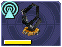
A VTOL CB sensor does the same thing, except to VTOLs assigned to it.
Sensor towers
Sensor towers and sensor units have several major differences:
-
A standard sensor turret has a range of 12; a standard sensor tower has a range of 16 (special sensor turrets have the same range as their tower).
-
A sensor tower cannot be ordered to target something specific; they automatically target the nearest unit (except CB and VTOL CB towers).
-
A sensor turret will not target anything automatically; it must be manually ordered to attack a target
What counts as a sensor
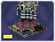 = 
 = 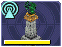
= 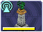
The Command Center (HQ) is also considered a standard sensor tower, while the Satellite Uplink Center is also considered a Wide Spectrum sensor tower. In addition to their usual functionality, they can also be used as the corresponding sensor tower (for instance, you can assign artillery to them).
Transports
Transports are used during the campaign to transport units from one sector to another (known as Away Missions). In multiplayer, they’re used to transport units from one part of the current map to another.
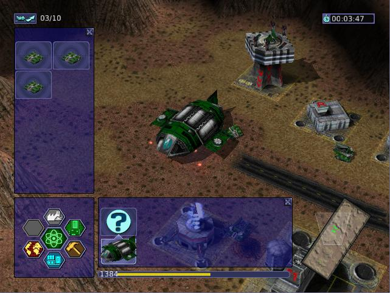
A transport with some units loaded in. The transport menu is open.
Campaign
Loading Units
To load units into a transport, select the desired units and click the transport. Only 10 units can occupy a transport at one time. The number of units you have loaded can be seen in the top left of the screen, next to the launch button.
Opening the Menu
To open a transport’s menu, click the transport itself. In the screenshot, the menu is open.
The units already in the transport are listed to the right.
Launching a Transport
To launch a transport, click the button in the top left corner of the screen. The transport will launch, and proceed to the destination.
Away Missions

Hunkered down at the landing zone.
Arrival
When you arrive at the destination, the transport will drop off the units you loaded into the transport and fly away.
Normal Base Operations
During away missions, you can still research, manufacture and design units. Simply do it as you would normally, and it will happen back in the base area. You can only build with trucks you have under your control, though. Remember you’re on an away mission, and in some missions, you won’t get reinforcements, so plan well.
Requesting Reinforcements!
On missions where you CAN request reinforcements, the transport button should be at the top left of the screen. Click it, and you’ll see the transport menu, with one little twist - all the units you left at home alone are on the right side of the screen.
To load units into the transport, click them, and they’ll be moved from the right side of the screen to the left. To launch, hit the launch button again. To close this screen, hit the middle button on the Command Panel.
Your units will be on their way. The timer next to the Transport button will have the time remaining until your units get to your location.
Take Me Home
Once your units are on an away mission, they’re not going home until the mission is completed, or you’ve gotten them killed. I think they’d prefer the earlier option.
Cyborg Transport
As you may or may not have guessed by the name, it can only hold Cyborgs, no normal units or VTOLs allowed. Cyborg Transports can only be built by VTOL Factories with 2 modules attached, and the technology needs to be researched.
Loading
To load a cyborg into the transport, select it and click the Cyborg Transport. The cyborg will load on.
Moving
The Cyborg Transport moves like a normal VTOL - select it and click on a piece of terrain to move it. It will take off and land at the place you selected.
Unloading
The interface used by the Cyborg Transport is a watered-down version of the Transport interface. To open it, right click the transport. The cyborgs loaded on will be displayed on the left. To boot out a cyborg, click it (while landed, we don’t want them falling, do we? :) ).
Destruction
Cyborg Transports have no weapons, and so are sitting ducks for AA turrets and hardpoints. If a Cyborg Transport is destroyed and it has a few cyborgs on board, you’ll lose them too. So be careful, OK?
Keyboard Shortcuts
These are the default keyboard shortcuts. If you have customized your key mapping, your shortcuts may be different.
Game
Esc |
Pause/Menu |
F1 |
Manufacture |
F2 |
Research |
F3 |
Build |
F4 |
Design |
F5 |
Intelligence |
F6 |
Commanders |
` |
Open/close messages at top |
Multiplayer communication
Enter |
Send message |
Alt+H |
Drop beacon |
Z |
Toggle sensor display |
Ctrl+[number] |
Assign group [number] |
[number] |
Select group [number] |
Alt+[number] |
Select commander [number] |
Unit selection by type
Ctrl+U |
Select all units |
Ctrl+Z |
Select all units with the same components |
double-click |
Select all units with the same components |
Ctrl+S |
Select all units on screen |
Ctrl+D |
Select all heavily damaged units |
Ctrl+A |
Select all attack units (units with weapons) |
Ctrl+V |
Select all VTOLs |
Ctrl+H |
Select all hover units |
Ctrl+W |
Select all wheeled units |
Ctrl+F |
Select all half-tracked units |
Ctrl+T |
Select all tracked units |
Unit orders
Ctrl+click |
Queue order * |
NUM0 |
Open orders menu |
right-click |
Open orders menu |
/ |
Do or Die! (Do not retreat automatically) |
. |
Retreat at Heavy Damage |
, |
Retreat at Medium Damage |
F |
Fire at Will |
E |
Return Fire |
C |
Hold Fire |
S |
Hold Position |
P |
Pursue |
Q |
Patrol |
I |
Optimum Range |
U |
Long Range |
R |
Return for Repair |
Ctrl+R |
Return for Recycling |
* "Queue order" means that when you Ctrl+click, the unit will do what it would do if you had clicked, but it will do it after it’s finished what it’s currently doing. You can hold down Ctrl and tell the unit to do a whole bunch of things, and it will do them in order.
Game control
Ctrl+- |
Decrease game speed * |
Ctrl+= |
Increase game speed * |
NUM. |
Toggle sound |
* Note that changing the game speed might lead to problems.
View
B |
Center view on Command Center |
F12 |
View location of previous message |
Camera control
Backspace |
Snap (rotate) view to North |
NUM8 |
Pitch back (rotate up) |
NUM2 |
Pitch forward (rotate down) |
NUM5 |
Reset pitch (reset vertical rotation) |
NUM4 |
Rotate left |
NUM6 |
Rotate right |
space |
Tracking camera (follow selected unit) |
Interface
F10 |
Take screenshot |
Shift+Tab |
Toggle radar colors |
Ctrl+Tab |
Toggle radar terrain |
Tab |
Toggle interface |
Credits
Taken from the AUTHORS.TXT file:
Original game developed by Pumpkin Studios, and published by EIDOS Interactive. The Warzone 2100 Project team, in alphabetical order: Thomas Barlow <Mysteryem> : 3D Graphics -- <Buginator> : Programming Bruce V. Edwards <cathuria> : 2D/3D Graphics Elio Gubser <elio, ohyeh> : 2D Graphics Steven Koenig <kreuvf> : Documentation, translation Gerard Krol <gerard_> : Programming, Textures Guangcong Luo <Zarel> : Programming, Balancing, and Documentation Per I. Mathisen <per> : Programming Kim Metcalfe <lav-coyote25> : Documentation, Maps and Support Christian Ohm <cybersphinx> : Programming Tim P. <kamaze> : Webmaster Giel van Schijndel <Giel> : Programming and Debian Linux and Windows Packaging Dennis Schridde <devurandom> : Programming and general Linux and Windows Packaging Freddie Witherden <EvilGuru> : Programming and MacOSX Packaging Former contributors to the GPL version, in alphabetical order: Scott Balneaves <sbalneav> : Programming Roman C. <troman> : Programming and Scripting + Scripting-engine rewrite and AI Denis Dupeyron <charun> : Programming Don Edwards : 2D Graphics support Mike Gilmore <Chojun> : Programming -- <Hatsjoe> : 2D Graphics Carl Hee <Watermelon> : Programming + Multiturrets Adam Holland Stefan Huehner <shuehner> : Programming + original 64bit support Ari Johnson <iamtheari> : Programming and MacOSX Packaging + original MacOSX port Martin Koller <mkoller> : Programming Angus Lees <gus> : Debian Packaging Dennis Luxen <pret> : Programming Kevin Malec <Kevin`> : Websupport Dion Mendel <noid> : Programming, original Linux port Phil Procario <GrimMoroe, grimandmandy> : 3D Graphics -- <Pseudonym404> : Programming + original 64bit support Victor Qamly <vqamly> : Programming Marcus Rast <charon> : Programming Ben Russon <grizzly> : Support Hylke van der Schaaf <TheNoid> : Programming Dmitri Shuralyov <shurcool> : Programming Rodolphe Suescun <rodzilla> : Programming -- <vs2k5> : Programming Non-project members whose content has been used in Warzone, in alphabetical order: Tristan Bethe : Terrain textures Jennifer Boyer : Terrain textures Bart Everson : Terrain textures Mitch Featherston : Terrain textures Peter Kaminski : Terrain textures Konstantin Kleine-Niermann : Terrain textures Sherrie Thai : Terrain textures Mark A. Vargas : Terrain textures Writers of the Warzone 2100 Quick Start Guide: Ben Latimore <BlueMaxima>: Wrote most of this guide's content Guangcong Luo <Zarel>: Rewrote some sections This guide is published under the CC0 license.